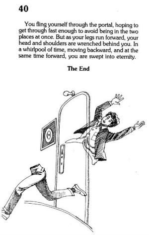

| Teleporting Situation #1. When you measure your constituent atoms… ✦ This may be the first step of teleportation. As tepleportation is sending information of my atoms, I have to measure my physical body info. When I fill sign-up sheet in a new website, there is some personal questions and answers.(fig.1) It exists incase I forget your password in the future, the answers identify it’s real "me", not hackers or aliens. I found this would be the similar step with teleportation to confirm real me. Sometimes my memory is rusty what the answer was though... (fig.1) ✦✦ |
| Teleporting Situation #2: When you set the destination point… Are you familiar with “an underwater plane”? An underwater airplane has a ship and plane at the same time like two sides of a coin. I believe a paradox is the real meaning of teleportation. Some see the meaning of teleportation as "imortal life", because teleportation makes us exist everywhere in anytime. But if I could live forever teleporting many places over and over, would I still be "me"? Maybe teleportation doesn't give me eterner life, but even not existing, Because of nothing there that can be called ego. Therefore, "me" is a paradox that is not immortal, and has never existed. So teleportation is actually just moving my physical body. The rest gives just extra meaning. Will your ego still exist? If we could teleport together, wouldn't we just exist psychologically? Ego is an illusion, just movement, and flow... |
| Teleporting Situation #3: When you dissociate yourself into your constituent atoms and make a map showing the relationships of these atoms... |
| Teleporting Situation #4: When you send the information to the chosen destination point... My old collegue has ackward experience. He needed to sent his income tax and all the finantial infos a few years ago via e-mail to the finantial team. But somehow-he probably too busy by dealing with something-he did cc the attachment with all workers in our agency, which was over 100 people... He should've be cautious when he was about to hit a "sending" buttom. It was so embarrassing and shouldn't happen again.  |
| Teleporting Situation #5: When you re-associate yourself from the constituent atom into your bodily form... |
Teleportating Situation #6: Complete.
Are you familiar with “an underwater plane”? An underwater airplane has a ship and plane at the same time like two sides of a coin. I believe a paradox is the real meaning of teleportation. Some see the meaning of teleportation as "imortal life", because teleportation makes us exist everywhere in anytime. But if I could live forever teleporting many places over and over, would I still be "me"? Maybe teleportation doesn't give me eterner life, but even not existing, Because of nothing there that can be called ego. Therefore, "me" is a paradox that is not immortal, and has never existed. So teleportation is actually just moving my physical body. The rest gives just extra meaning. Will your ego still exist? If we could teleport together, wouldn't we just exist psychologically? Ego is an illusion, just movement, and flow... |
✍︎ Copyright by Harin Jung. All Rights Reserved.